Project Overview
AlgoRhythm is an interactive e-learning platform designed to help students master algorithms and data structures through a combination of theoretical knowledge and practical problem-solving.
The platform bridges the gap between theoretical understanding and practical implementation, offering a comprehensive learning environment where students can study concepts, solve programming challenges, visualize algorithm execution, and track their progress.
Motivation
Programming education is recognized as a challenging and demanding process. However, recent years have seen significant growth in both the popularity and accessibility of educational tools and materials. Educational materials increasingly include content tailored not just for specialists but for complete beginners.
Growing Demand
The increasing popularity of programming education creates a growing audience for integrated learning platforms that seamlessly combine theoretical knowledge with practical application.
Integration Gap
Existing e-learning platforms rarely offer complete integration of theoretical materials, programming tasks, and algorithm visualizations in a unified, coherent learning environment.
Targeted Solution
The solution is designed for computer science students, focusing specifically on algorithms and data structures — fundamental topics required for comprehensive CS education.
Core Assumptions
Complete & Intuitive Learning
The platform provides a comprehensive experience combining theory, practical exercises, and visualizations with an intuitive user interface.
Progress Tracking
Users can mark materials as read and task solutions are automatically recorded in the database for progress monitoring.
Structured Learning Progression
Courses organize thematically related materials and tasks, guiding users through a structured learning progression.
Dual Role System
Users access learning materials and solve tasks, while administrators manage content, edit courses, and monitor platform activity.
Future Development Directions
The modular architecture and clear code structure provide a solid foundation for continuous enhancement and scaling.
Extended Role System
Introduce new roles like editor to enable content creators and teaching assistants to manage educational materials without full administrator privileges.
Interactive Tasks
Expand beyond code-writing tasks with multiple-choice questions and interactive exercises for comprehensive knowledge validation.
Multi-Language Support
Add support for additional programming languages beyond current implementation to broaden learning opportunities.
Achievement System
Expand the achievement framework with more badges and milestones to increase platform engagement and gamification.
Functional Requirements
User Capabilities
Browse Materials
View published lectures, tasks, and courses in an organized and intuitive manner with filtering and search capabilities.
Course Progression
Track progress through structured courses with automatic calculation based on completed tasks and read materials.
Solve Tasks
Write and submit solutions to programming tasks with automatic test execution and result feedback.
Request Hints
Access contextual hints and suggestions for challenging tasks to guide learning without revealing solutions.
Visualizations
Write algorithms using graph structures and visualize their execution step-by-step in real-time.
Earn Achievements
Receive badges and recognition upon reaching learning milestones and completing challenges.
Community Discussion
Write, edit, and manage comments on tasks to engage with peers and discuss solutions.
Authentication
Secure registration, email verification, and login with optional Google OAuth integration.
Administrator Capabilities
Content Management
Create, edit, and delete lectures, courses, and tasks with a user-friendly interface.
User Permissions
Grant or revoke administrator roles and manage user access levels across the platform.
Monitor Activity
View recent comments and user submissions with filtering and sorting capabilities.
Architecture & Technology
Frontend
React 18+
Modern UI library with component-based architecture for building interactive user interfaces.
TypeScript
Type-safe JavaScript enabling more robust code with excellent IDE support and developer experience.
Tailwind CSS
Utility-first CSS framework for rapid, consistent, and responsive user interface development.
Framer Motion
Advanced animation library providing smooth, performant transitions and interactive elements.
Backend & API
ASP.NET Core 6+
Modern, high-performance web framework for building scalable REST APIs with C#.
Entity Framework Core
ORM for database access with LINQ queries and automatic migrations.
JWT & OAuth 2.0
Secure token-based authentication with Google OAuth integration support.
Data & Infrastructure
SQL Server 2022
Enterprise-grade relational database for reliable, scalable data storage.
Docker
Containerization ensuring consistent deployment across development and production environments.
Microsoft Azure
Cloud platform providing hosting, database services, and scalable infrastructure.
System Architecture
Design Principles
- Modularity: Separation of concerns with well-defined module boundaries
- Scalability: Cloud-native design with containerization ready architecture
- Security: Secure authentication, isolated code execution containers
- Maintainability: Consistent naming conventions, loose coupling between components
- Performance: Optimized queries, caching strategies, efficient algorithms
Code Execution
Remote code execution is a critical feature enabling safe evaluation of user-submitted code. The platform uses Docker containerization with strict resource limitations, paired with Roslyn's compiler-as-a-service architecture for high performance and security.
Execution Flow
Code Submission
Database record created with pending status. Backend returns confirmation immediately without blocking. Frontend polls for execution results.
Preparation & Routing
Code and test cases formatted for the executor. NGINX load balancer distributes requests across container instances.
Compilation & Analysis
Roslyn compiler performs lexical analysis, parsing, semantic validation, and code generation. Fine-grained access enables advanced diagnostics and security checks.
Isolated Execution
Code runs in isolated Docker container with resource limits (CPU, memory). Time constraints prevent infinite loops; failures isolated from other instances.
Results & Feedback
Execution results stored in database. Frontend polling retrieves results with test outputs, error messages, and performance metrics.
Design Trade-offs
The Roslyn-based approach prioritizes performance (comparable to local execution) and scalability (easy container replication) over multi-language support. This makes the platform ideal for academic environments where C# dominance and responsiveness are more valuable than language diversity.
Platform Overview
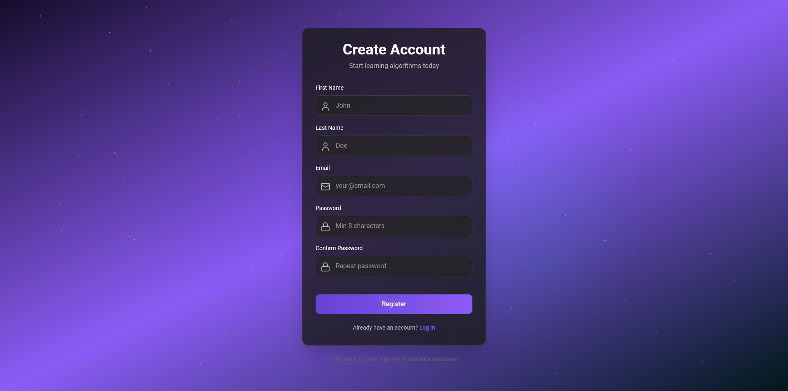
Registration view
Users start by registering with their email address. The registration form is simple and intuitive, collecting only essential information needed to create an account.
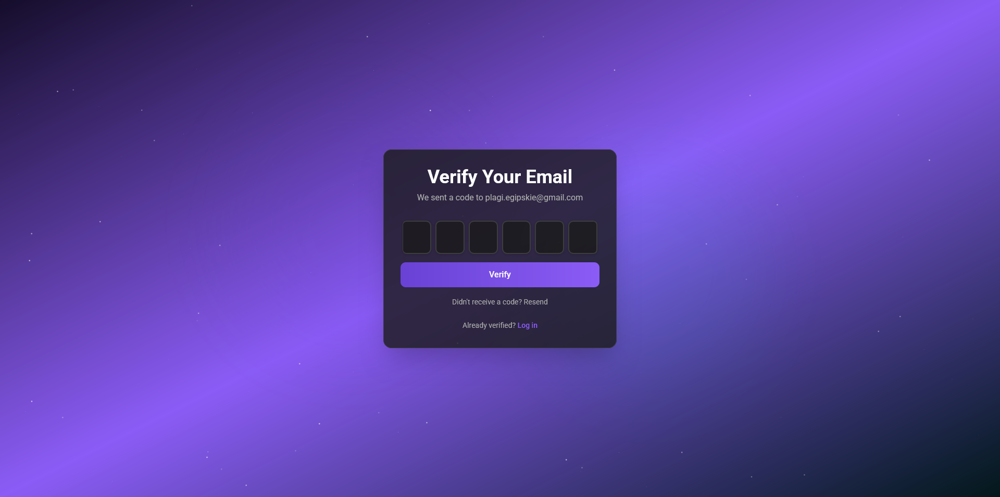
Email verification view
After registration, users verify their email address. A verification link is sent to the provided email, ensuring account authenticity and enabling secure communication.
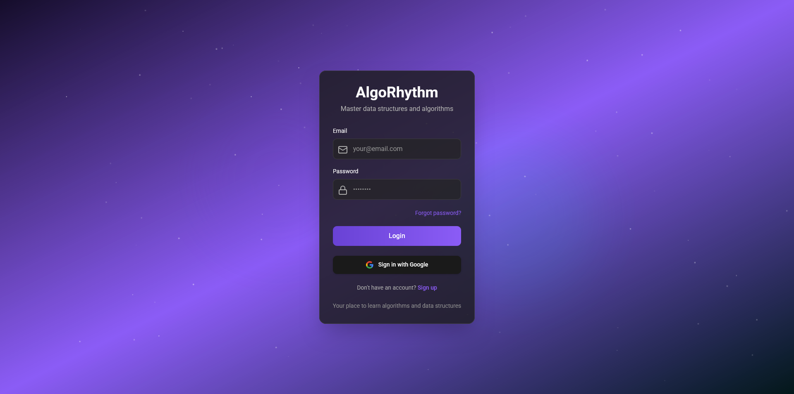
Login view
The login page provides secure access to the platform. Users can authenticate with their credentials or use Google OAuth for quick, passwordless sign-in.
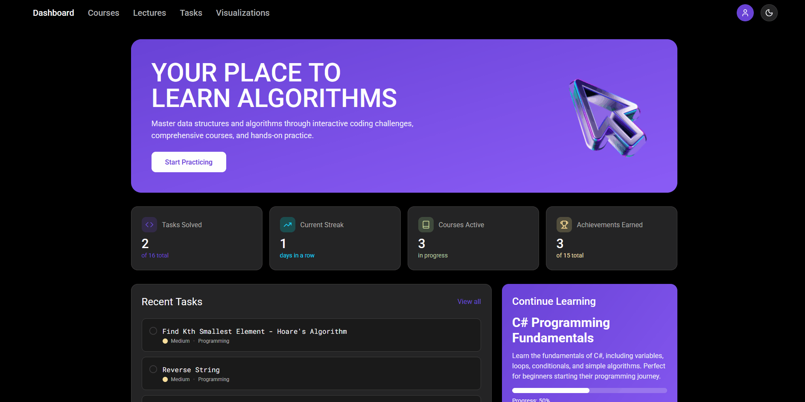
Dashboard to courses transition
Upon login, users see the dashboard showing their progress. They can navigate to the courses list to browse all available learning materials and topics.
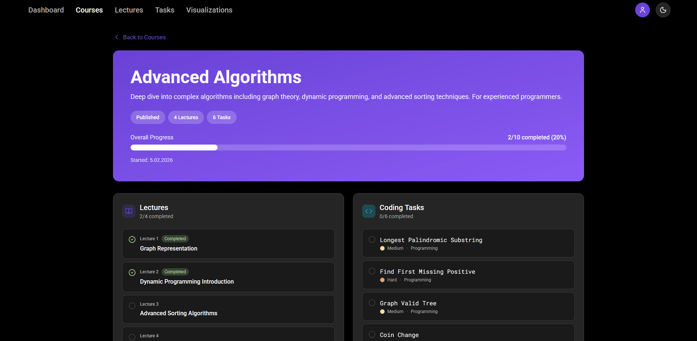
Course to lecture view transition
Selecting a course displays the lecture materials. Users can read through course content, mark materials as completed, and track their learning progress.
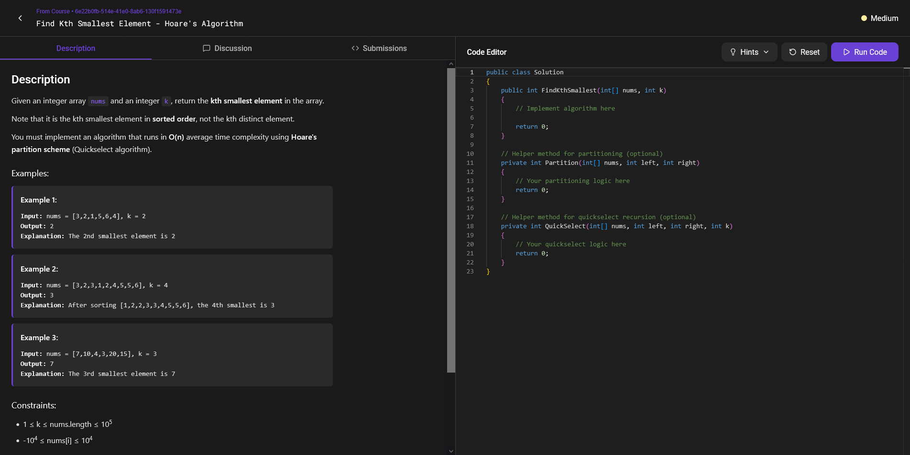
Task view
Tasks allow users to apply their knowledge. Each task includes the problem description, code editor, and test cases to validate solutions.
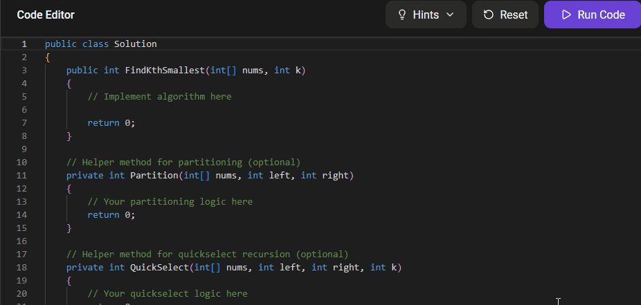
Code analysis
The platform analyzes submitted code in real-time, detecting syntax errors and semantic issues before execution. Detailed feedback helps users understand and fix problems.
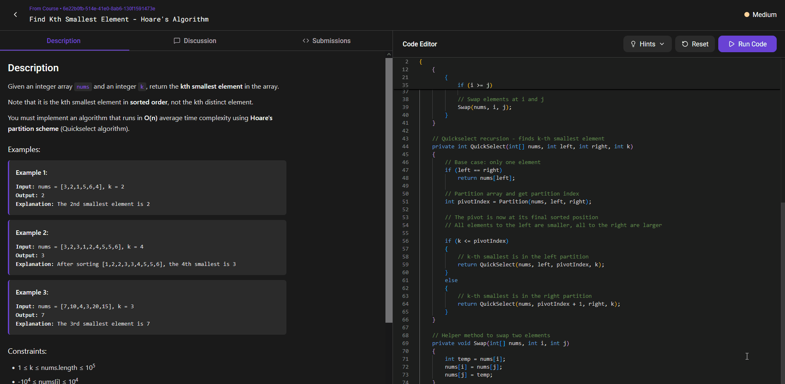
Code execution
When code is executed, the platform runs it in an isolated Docker container. Results display immediately with test case outputs and performance metrics.
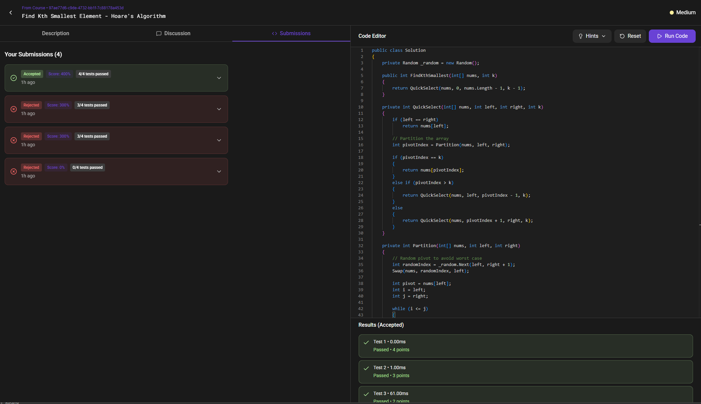
Submissions view
Users can view all their previous submissions in one place. Each submission shows the code, execution results, and timestamp of the attempt.
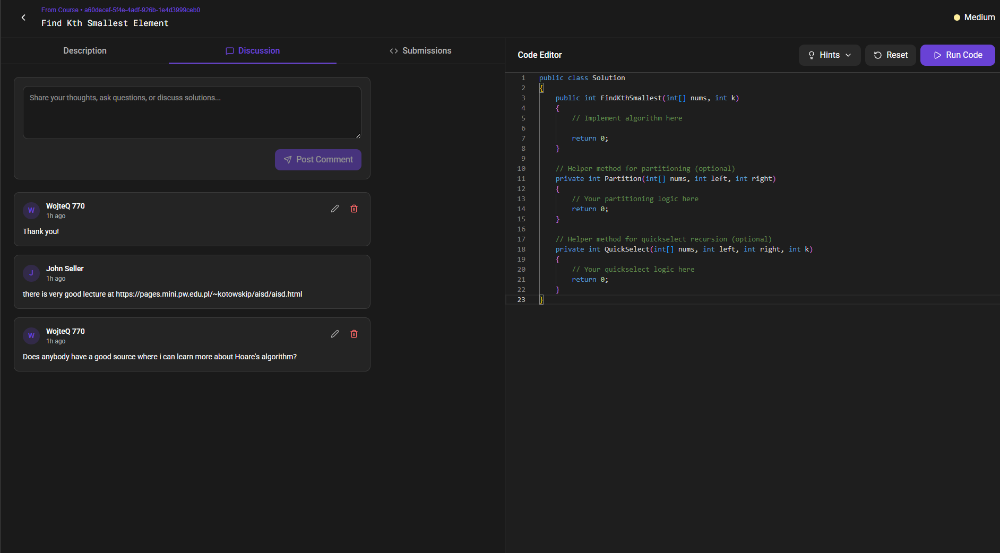
Comments view
Community discussion is built into each task. Users can comment, ask questions, and share insights with peers to enhance collaborative learning.
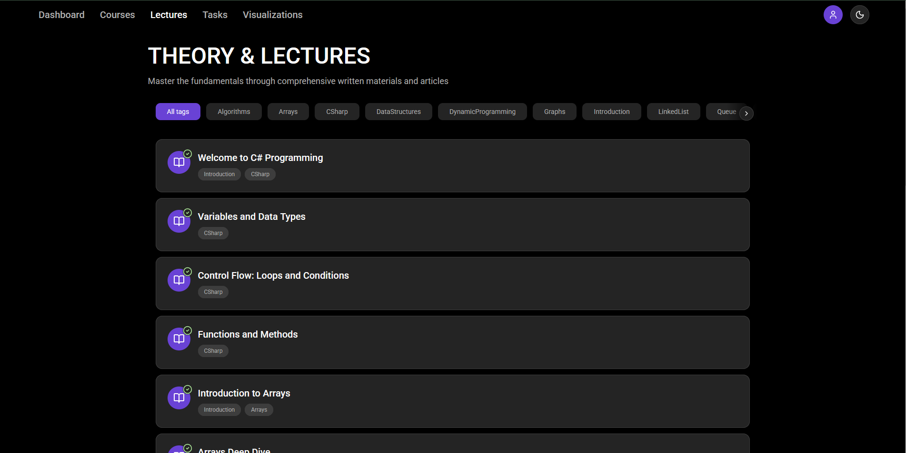
Lectures tab view
The lectures tab within a course displays all theoretical materials. Users navigate through lessons, read content, and mark materials as studied.
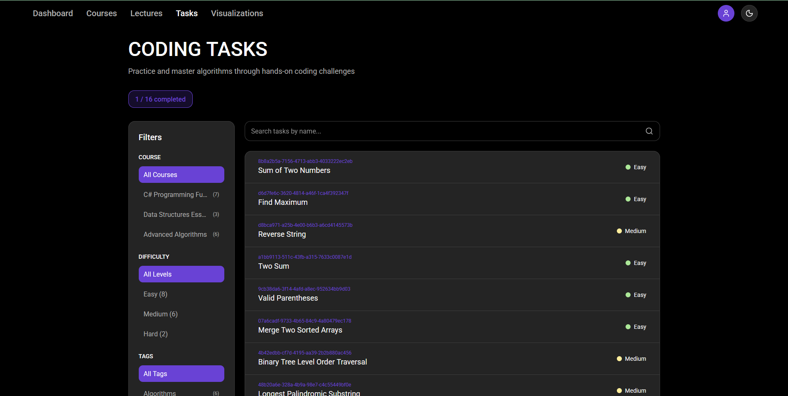
Tasks tab view
The tasks tab shows all coding exercises in a course. Users can filter by difficulty, view their progress, and access tasks they want to practice.
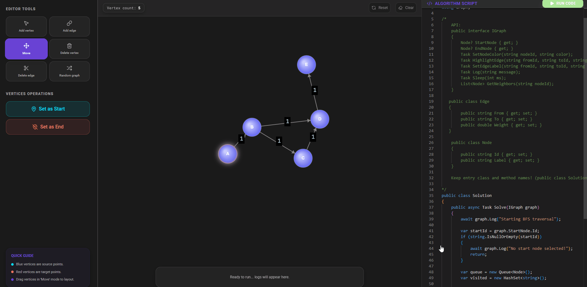
Algorithm visualizations
Interactive visualizations show algorithm execution step-by-step. Users can write sorting algorithms and watch them execute with detailed process visualization.
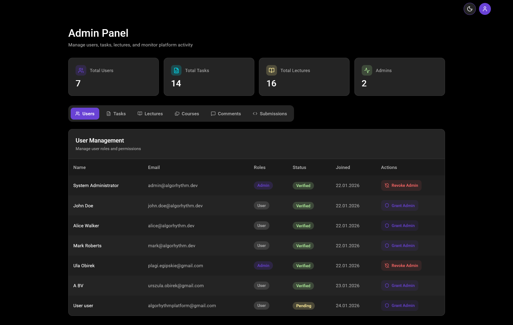
Admin panel
Administrators have a dedicated panel to manage courses, tasks, and platform activity. They can create content, monitor user submissions, and manage permissions.
Development & Deployment
Prerequisites
- Docker & Docker Desktop - Latest version required for containerization
- Git - Latest version for repository management
- SQL Server Management Studio - Optional, for database management
- Visual Studio 2022/2026 - Optional, for development environment
- Modern Web Browser - Chrome recommended (mobile devices not supported)
Project Structure
Create the following directory structure:
AlgoRhythmProject/
├── Frontend/
│ ├── AlgoRhythm/
│ └── .env
└── Backend/
└── AlgoRhythm/
├── .env
├── docker-compose.dev.yml
└── docker-compose.prod.ymlEnvironment Variables Setup
Backend Variables (.env)
SA_PASSWORD=your_db_password
JWT_KEY=your_jwt_secret_key
CONNECTION_STRING=Server=mssql;...
SENDGRID_API_KEY=your_sendgrid_key
FRONTEND_URL=http://localhost:5173
CODE_EXECUTOR_URL=http://executor-lb:80
GOOGLE_CLIENT_ID=your_google_client_id
GOOGLE_CLIENT_SECRET=your_google_secretFrontend Variables (.env)
VITE_API_BASE_URL=http://localhost:7062/api
VITE_ANALYZER_URL=http://localhost:5095/roslynhub
VITE_VISUALIZER_URL=http://localhost:5148/visualizerhub
VITE_GOOGLE_CLIENT_ID=your_google_client_idDevelopment Environment
The development environment optimizes code and testing with local builds.
- Clone repositories:
git clone https://github.com/AlgoRhythmProject/Backend.git git clone https://github.com/AlgoRhythmProject/Frontend.git - Create .env files in both Backend/AlgoRhythm/ and Frontend/AlgoRhythm/ with variables listed above
- Navigate to Backend/AlgoRhythm/ and run:
docker-compose -f docker-compose.dev.yml up --scale executor=2 - Access the application at http://localhost:5173
Production Environment
Production environment uses lightweight pre-built images and automated CI/CD.
- Download
docker-compose.prod.yml - Create a .env file with all backend variables plus:
AZURE_STORAGE_CONNECTION_STRING=your_azure_connection ANALYZER_URL=http://localhost:5095/roslynhub VISUALISER_URL=http://localhost:5148/visualizerhub BACKEND_URL=http://localhost:7062/api - Run:
docker-compose -f docker-compose.prod.yml up --scale executor=2 - Application automatically updates database and initializes with seed data
External Dependencies
The platform depends on the following external services:
- Roslyn - C# compiler (Microsoft).
- SQL Server - Primary database. Entity Framework Core supports MySQL, SQLite, PostgreSQL as alternatives.
- SendGrid - Email service. Replaceable via IEmailSender interface implementation.
- Azure Blob Storage - File storage for videos/images. Replaceable via IFileStorageService interface.